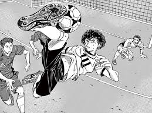
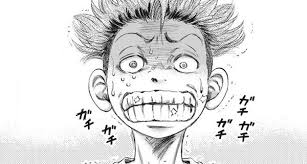
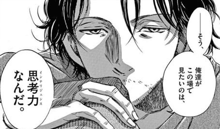
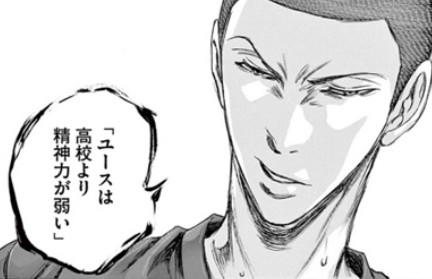

主人公がサイドバック！？
舞台は高校ユース！
現代フットボールを反映！
攻守コンプリート？
戦術の魅力に酔いしれる！
企業家に人気のマンガ！？
ストーリー
- 主人公・葦人が中学最後の大会で活躍するも、試合終了間際に相手選手を殴り退場となるシーンから始まる。
- その試合を見ていた東京エスぺリオンユースの福田監督が葦人のある才能を見抜きスカウト。
- その唯一無二の才能とは？
- 高校ユースという特殊な舞台設定ならではの展開がそこにはある。
- 現実とのリンクもありながら、現代フットボールの真髄を漫画で学べる。
魅力
- 「主人公がサイドバック」
⇒「サイドバック＝地味」と思っている人はアオアシを読むとその偏見が覆る。 - 「葦人の人間性」
⇒なぜ冒頭シーンで相手を殴ったのか？その理由に葦人の人間性が詰まっている。 - 「戦術的要素が強い」
⇒このマンガを読めば現代フットボールを学ぶことができる。 - 「ユース組とセレクション組の対立」
⇒お互いの価値観の違いが思わぬ争いを起こす？ - 「インテリジェンスの重要性」
⇒「人間は考える葦である。」という言葉が出てくるなど「考える」という部分にフォーカスしている。
キャラクター
青井 葦人
AOI ASHITO

- 本作の主人公。
- 元々FWであったが福田監督の進言によりサイドバックへ転向。
- 技術レベルは決して高くないが、他にはない唯一無二の才能を武器に戦う。
- 家族思い、友達思いの性格で周りからの信頼も厚い。
- 攻守コンプリートを目指し日々奮闘している。
大友 栄作
OOTOMO EISAKU

- 葦人とはセレクションで出会った。
- ポジションはボランチ。
- 試合前はあまりの緊張から毎回震えているが、ピッチに入ると一変する。
- 冷静な状況判断と豊富な運動量を生かしたプレーでチームを牽引する。
- 葦人から天才と認められるほどのサッカーへの愛情・情熱を持っている。
福田 達也
FUKUDA TATSUYA

- 東京エスぺリオンユースの監督。
- 自身はサッカー選手としては早熟の天才。
- 戦術家であり、ポゼッションサッカーをチームに浸透させる。
- 思考、言語化を選手に強く求める。
- 彼の野望は「エスペリオンをレアル、バルサのようなクラブに負けない世界一のクラブにすること」。
阿久津 渚
AKUTSU NAGISA

- 葦人の1学年先輩。その代の唯一のセレクション合格者。
- ポジションはCB。
- 屈強なフィジカルを武器に圧倒的な対人能力を見せる。
- エゴが強すぎるあまりチームメイトと対立することも多い。
- 特に葦人に対しては人一倍強い口調で接しているが、その理由とは？
キーワード
- 思考
- 言語化
- 司令塔
- 攻守コンプリート
- エゴ
「人間は考える葦である」、「自分でつかんだ答えなら、一生忘れない」などのセリフが出てくることからも自ら思考を働かせてプレーするということがテーマとなっているのが読み取れる。葦人も初めてAチームの練習に参加した際、瞬時の状況判断を繰り返しながら考えてプレーしている先輩たちに衝撃を受けた。
これまで世に出されたサッカーマンガとの大きな違いが言語化である。感覚的なプレーの描写がほとんどなく、沢山のプレーが言語化されて描かれている。また、福田監督も選手に自分の感覚を言語化させるような指導法を取っている。
中盤の10番タイプの司令塔のみでなく、葦人が司令塔型サイドバックとしてプレーする場面も多く描かれる。
攻撃、守備両面を完璧にこなすということ。このタイプのサイドバックが現在求められており、マンガの中では葦人が理想として掲げるタイプ。現実でいうキミッヒ（バイエルンミュンヘン）のような選手。
日本サッカーに最も足りないといわれている部分でもあり、アオアシのなかでも強調して描かれている。福田が桐木に放った「エゴの形を変えろ。」は個人的に印象に残っている名言。
名シーン
- 地元を離れるときの母の手紙
- 阿久津との出会い
- 衝撃のコンバート
- 大友Aチームデビュー
- ダイアゴナルラン
母子家庭で育ち、家族を大事にしている葦人。東京へ上京する際に兄からプレゼントを渡される。中には母からの手紙と大きな箱が入っていた。その手紙には普段多くを語らない母親からの感動のメッセージが。そして大きな箱には何が？
ユースに入団してすぐに、１学年上の先輩チームと練習試合が組まれる。先輩チームの中心はその学年唯一のセレクション合格者である阿久津。阿久津はなぜか葦人に対して人一倍厳しく当たる。その理由とは？
FWとして確実にステップアップを積み重ねていた葦人。しかし、ある日の試合後、福田監督に「サイドバックに転向しろ。」と告げられる。福田はなぜサイドバック転向を告げたのか？
葦人と同様、セレクションを合格し厳しい練習も乗り越えてきた大友。Aデビュー戦は意外な形での出場となり、ピッチに入る前はいつも以上に震えていた。しかし、ピッチに入ると様子は激変、チームの連携も良くなる。大友がチームにもたらした効果とは？
ファンの間でも最も人気の試合の1つである武蔵野ユース戦で見せた葦人のプレー。現実でも必要とされるこの動きが初心者にも理解できるようにわかりやすく言語化されている。